-
Bookshelve Search on UrbanLadder
3:32:38 PM / 00:02:14:050 Fail
Bookshelve Search on UrbanLadder
03.07.2024 3:32:38 PM 03.07.2024 3:34:52 PM 00:02:14:050 · #test-id=1PassSearch BookshelveGiven User is already on UrbanLadder WebPagestepDefinitionFile.HooksFile.addScreenshot(io.cucumber.java.Scenario)PassedStepScreenshotThen User search for Bookshelves in Search BoxstepDefinitionFile.HooksFile.addScreenshot(io.cucumber.java.Scenario)PassedStepScreenshot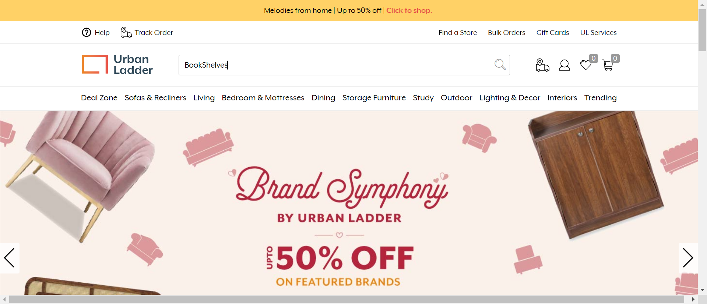Then User Click Search buttonstepDefinitionFile.HooksFile.addScreenshot(io.cucumber.java.Scenario)PassedStepScreenshot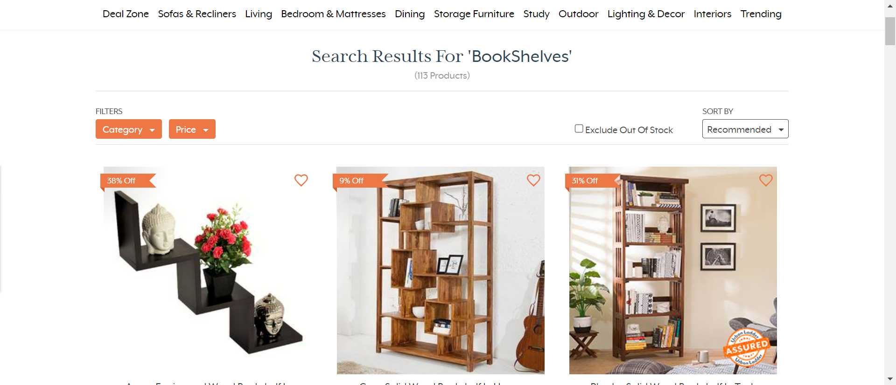PassCapture the Bookshelve DetailsThen User Close the popupstepDefinitionFile.HooksFile.addScreenshot(io.cucumber.java.Scenario)PassedStepScreenshot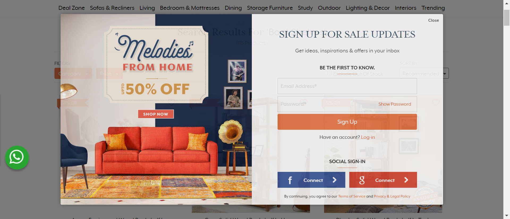Then User Scroll Down page Till Bookshelves AvailablestepDefinitionFile.HooksFile.addScreenshot(io.cucumber.java.Scenario)PassedStepScreenshot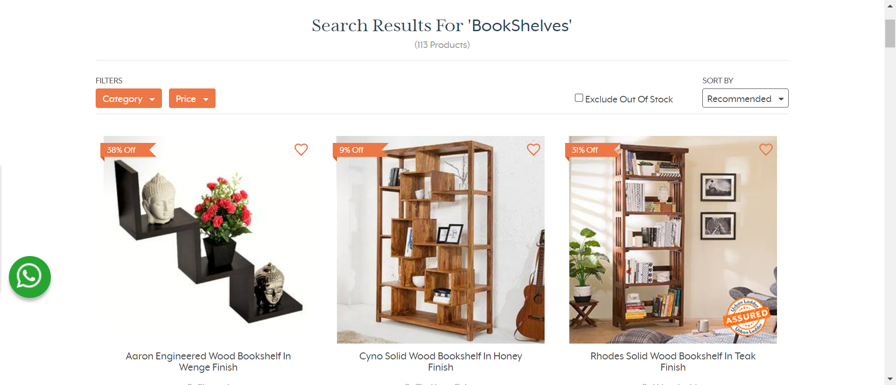When User Hover to the Category optionstepDefinitionFile.HooksFile.addScreenshot(io.cucumber.java.Scenario)PassedStepScreenshot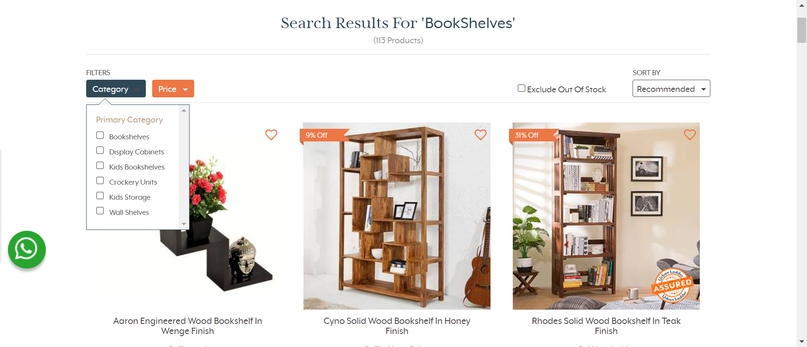Then User Select category as BookshelvestepDefinitionFile.HooksFile.addScreenshot(io.cucumber.java.Scenario)PassedStepScreenshot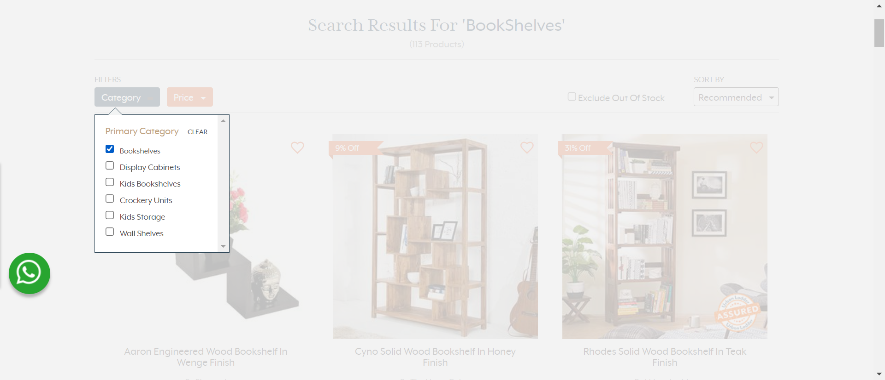When User Hover to Price optionstepDefinitionFile.HooksFile.addScreenshot(io.cucumber.java.Scenario)PassedStepScreenshot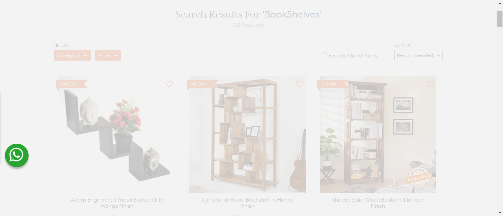Then User wait for Price Slide BarstepDefinitionFile.HooksFile.addScreenshot(io.cucumber.java.Scenario)PassedStepScreenshot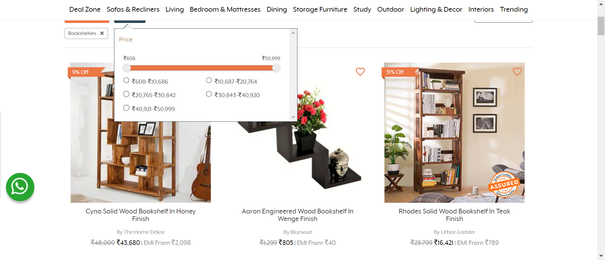Then User slide Max price to 15,000stepDefinitionFile.HooksFile.addScreenshot(io.cucumber.java.Scenario)PassedStepScreenshot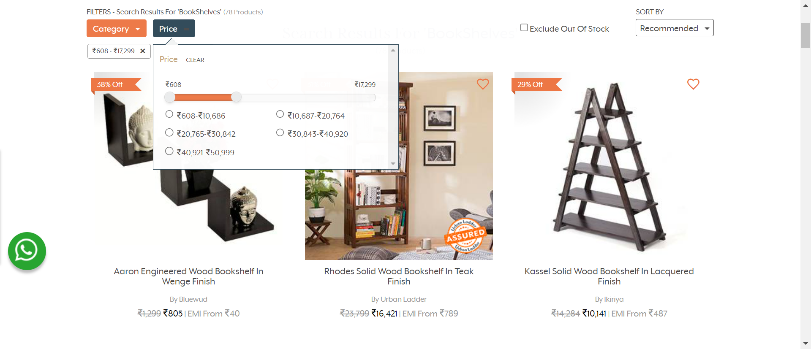When User hover to SortBy optionstepDefinitionFile.HooksFile.addScreenshot(io.cucumber.java.Scenario)PassedStepScreenshot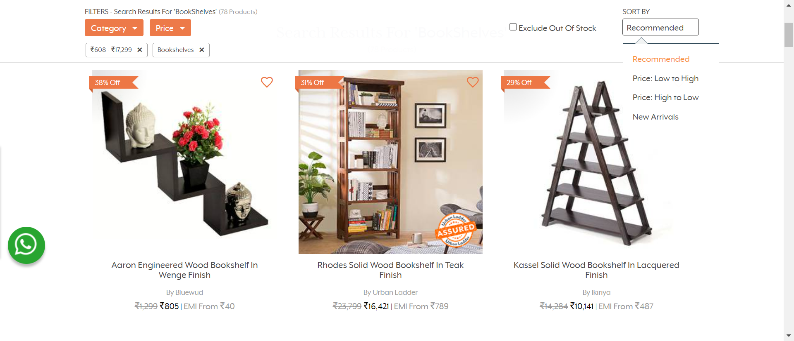Then User Select Sort By Price High to LowstepDefinitionFile.HooksFile.addScreenshot(io.cucumber.java.Scenario)PassedStepScreenshot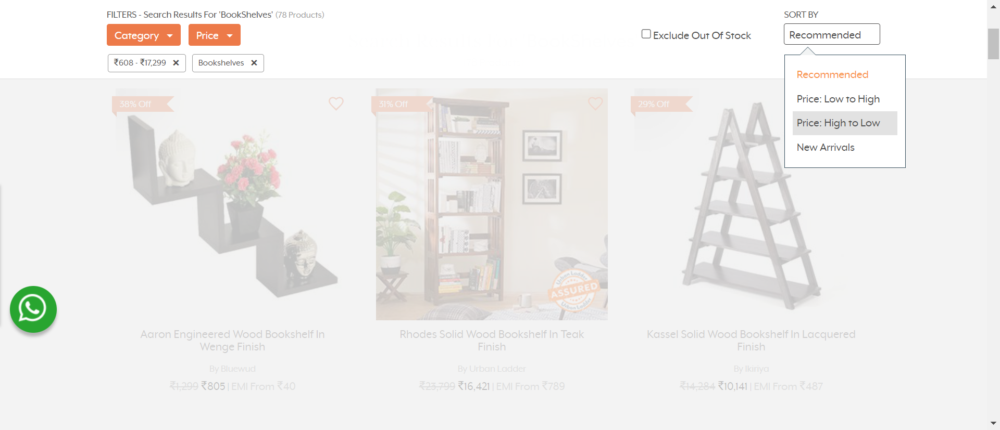Then User select in stock optionstepDefinitionFile.HooksFile.addScreenshot(io.cucumber.java.Scenario)PassedStepScreenshot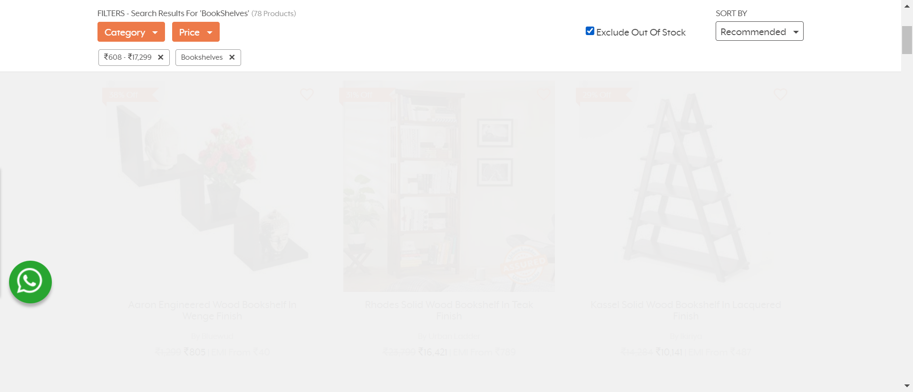Then User fetch all the Available Bookshelves and Store Top three in excelstepDefinitionFile.HooksFile.addScreenshot(io.cucumber.java.Scenario)PassedStepScreenshot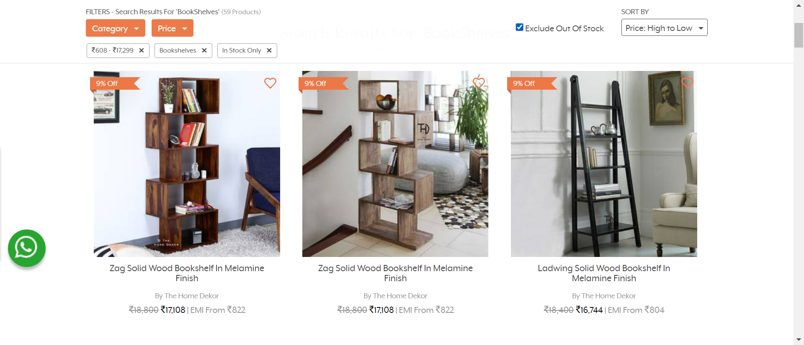Then User Print the top three Bookshelves on consolestepDefinitionFile.HooksFile.addScreenshot(io.cucumber.java.Scenario)PassedStepScreenshotFailCapture the Living Sub-Menu itemsThen User scroll page up till living is presentstepDefinitionFile.HooksFile.addScreenshot(io.cucumber.java.Scenario)PassedStepScreenshot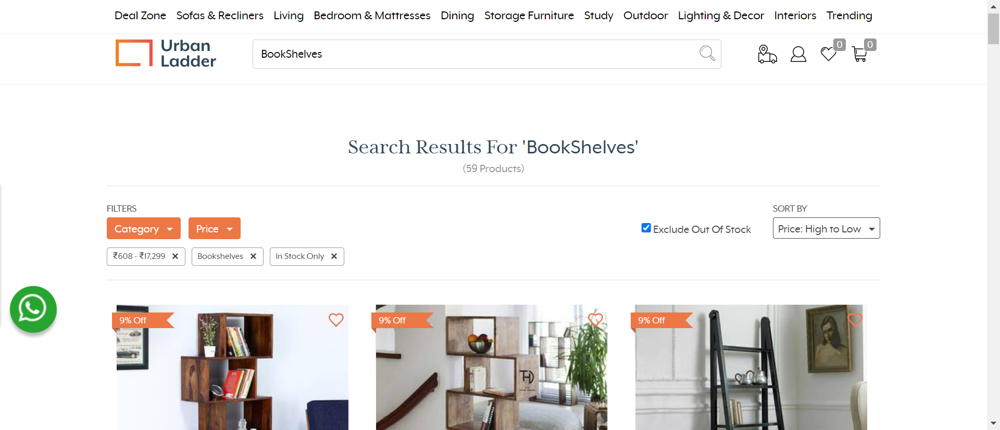When User hover to living optionstepDefinitionFile.HooksFile.addScreenshot(io.cucumber.java.Scenario)PassedStepScreenshot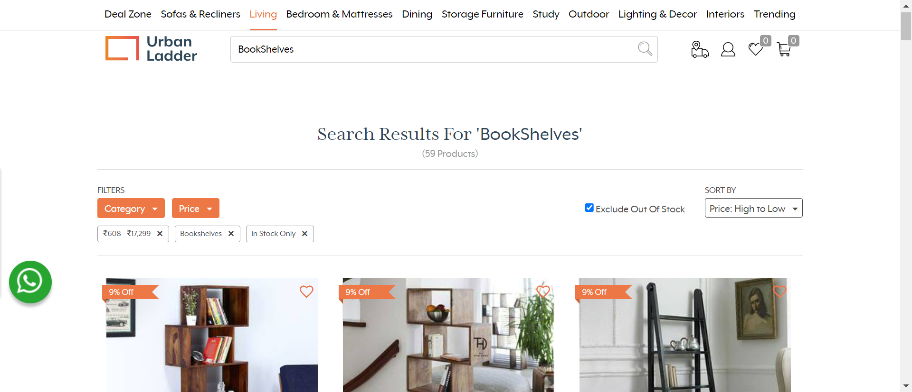Then User wait for submenu to appearstepDefinitionFile.HooksFile.addScreenshot(io.cucumber.java.Scenario)Then User fetch all option Available under Seating and Chair and store in excelStep skippedThen User Print the Available items on ConsoleStep skippedFailGift Cards and Form ValidationThen User wait for Gift Cards option visibilitystepDefinitionFile.HooksFile.addScreenshot(io.cucumber.java.Scenario)Then User Click Gift Cards buttonStep skippedThen Load the Json File for input as in this project input taken from Json FileStep skippedWhen User Select BirthdayOrAnniversary Gift optionStep skippedThen User Fill the AmountStep skippedWhen User click Next buttonStep skippedThen User Fill the Recipient NameStep skippedThen User Fill the Incorrect Recipient EmailStep skippedThen User Fill the Recipient Mobile numberStep skippedThen User Fill the Customer NameStep skippedThen User Fill the Customer EmailStep skippedThen User Fill the Customer Mobile NumberStep skippedThen User Fill the Customer AddressStep skippedThen User Fill the Customer PinStep skippedThen User Fill the Optional MessageStep skippedWhen User Click the Confirm buttonStep skippedThen User Capture the Error Message and Print it on ConsoleStep skippedThen User Clear the Recipient Email BoxStep skippedThen User Fill the correct Recipient EmailStep skippedWhen User Again Click the Confirm buttonStep skippedThen User Successfully submitted the details and on confirm details pageStep skippedFailValidating Submitted Form DetailsThen User Verify amount EneteredstepDefinitionFile.HooksFile.addScreenshot(io.cucumber.java.Scenario)Then User Verify Recipient NameStep skippedThen User Verify Recipient EmailStep skippedThen User Verify Recipient MobileStep skippedThen User Verify Customer NameStep skippedThen User Verify Customer EmailStep skippedThen User Verify Customer MobileStep skippedThen User Verify Customer CityStep skippedThen User Verify Customer PinCodeStep skipped
-
org.openqa.selenium.NoSuchWindowException
5 tests
org.openqa.selenium.NoSuchWindowException
5 failedStatus Timestamp TestName Fail 15:34:52 PM stepDefinitionFile.HooksFile.addScreenshot(io.cucumber.java.Scenario) Bookshelve Search on UrbanLadder.Capture the Living Sub-Menu items.stepDefinitionFile.HooksFile.addScreenshot(io.cucumber.java.Scenario)Fail 15:34:52 PM Then User wait for Gift Cards option visibility Bookshelve Search on UrbanLadder.Gift Cards and Form Validation.Then User wait for Gift Cards option visibilityFail 15:34:52 PM stepDefinitionFile.HooksFile.addScreenshot(io.cucumber.java.Scenario) Bookshelve Search on UrbanLadder.Gift Cards and Form Validation.stepDefinitionFile.HooksFile.addScreenshot(io.cucumber.java.Scenario)Fail 15:34:52 PM Then User Verify amount Enetered Bookshelve Search on UrbanLadder.Validating Submitted Form Details.Then User Verify amount EneteredFail 15:34:52 PM stepDefinitionFile.HooksFile.addScreenshot(io.cucumber.java.Scenario) Bookshelve Search on UrbanLadder.Validating Submitted Form Details.stepDefinitionFile.HooksFile.addScreenshot(io.cucumber.java.Scenario) -
org.openqa.selenium.NoSuchElementException
1 tests
org.openqa.selenium.NoSuchElementException
1 failedStatus Timestamp TestName Fail 15:33:53 PM Then User wait for submenu to appear Bookshelve Search on UrbanLadder.Capture the Living Sub-Menu items.Then User wait for submenu to appear
-
@sanity
5 tests
@sanity
2 passed 3 failedStatus Timestamp TestName Pass 15:32:38 PM Search Bookshelve Bookshelve Search on UrbanLadder.Search BookshelvePass 15:33:24 PM Capture the Bookshelve Details Bookshelve Search on UrbanLadder.Capture the Bookshelve DetailsFail 15:33:52 PM Capture the Living Sub-Menu items Bookshelve Search on UrbanLadder.Capture the Living Sub-Menu itemsFail 15:34:52 PM Gift Cards and Form Validation Bookshelve Search on UrbanLadder.Gift Cards and Form ValidationFail 15:34:52 PM Validating Submitted Form Details Bookshelve Search on UrbanLadder.Validating Submitted Form Details
Started
Mar 7, 2024 03:32:37 PM
Ended
Mar 7, 2024 03:34:53 PM
Features Passed
0
Features Failed
1
Features
Scenarios
Steps
Timeline
Tags
| Name | Passed | Failed | Skipped | Others | Passed % |
|---|---|---|---|---|---|
| @sanity | 2 | 3 | 0 | 0 | 40% |